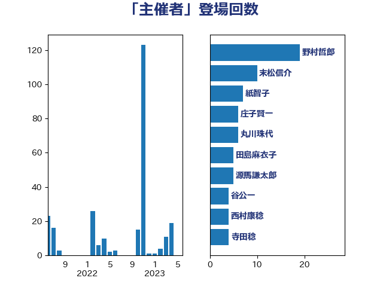

単語「主催者」

| 野村哲郎 | 自由民主党 | 19 回 |
| 末松信介 | 自由民主党 | 10 回 |
| 紙智子 | 日本共産党 | 7 回 |
| 庄子賢一 | 公明党 | 6 回 |
| 丸川珠代 | 自由民主党 | 6 回 |
| 田島麻衣子 | 立憲民主党 | 5 回 |
| 源馬謙太郎 | 立憲民主党 | 5 回 |
| 谷公一 | 自由民主党 | 4 回 |
| 西村康稔 | 自由民主党 | 4 回 |
| 寺田稔 | 自由民主党 | 4 回 |
| 鎌田さゆり | 立憲民主党 | 3 回 |
| 角田秀穂 | 公明党 | 3 回 |
| 米山隆一 | 立憲民主党 | 3 回 |
| 泉田裕彦 | 自由民主党 | 3 回 |
| 川田龍平 | 立憲民主党 | 3 回 |
| 岸田文雄 | 自由民主党 | 3 回 |
| 安江伸夫 | 公明党 | 3 回 |
| 鬼木誠 | 立憲民主党 | 2 回 |
| 馬場雄基 | 立憲民主党 | 2 回 |
| 葉梨康弘 | 自由民主党 | 2 回 |
| 舟山康江 | 国民民主党 | 2 回 |
| 漆間譲司 | 日本維新の会 | 2 回 |
| 永岡桂子 | 自由民主党 | 2 回 |
| 木原誠二 | 自由民主党 | 2 回 |
| 徳永エリ | 立憲民主党 | 2 回 |
| 山添拓 | 日本共産党 | 2 回 |
| 小沼巧 | 立憲民主党 | 2 回 |
| 勝俣孝明 | 自由民主党 | 2 回 |
| 齊藤健一郎 | 無所属 | 1 回 |
| 鳩山二郎 | 自由民主党 | 1 回 |
| 鰐淵洋子 | 公明党 | 1 回 |
| 高橋千鶴子 | 日本共産党 | 1 回 |
| 金子恵美 | 立憲民主党 | 1 回 |
| 野中厚 | 自由民主党 | 1 回 |
| 道下大樹 | 立憲民主党 | 1 回 |
| 谷田川元 | 立憲民主党 | 1 回 |
| 西村明宏 | 自由民主党 | 1 回 |
| 藤木眞也 | 自由民主党 | 1 回 |
| 萩生田光一 | 自由民主党 | 1 回 |
| 菅義偉 | 自由民主党 | 1 回 |
| 石川大我 | 立憲民主党 | 1 回 |
| 田村貴昭 | 日本共産党 | 1 回 |
| 田村智子 | 日本共産党 | 1 回 |
| 渡辺創 | 立憲民主党 | 1 回 |
| 河西宏一 | 公明党 | 1 回 |
| 柚木道義 | 立憲民主党 | 1 回 |
| 杉田水脈 | 自由民主党 | 1 回 |
| 斉藤鉄夫 | 公明党 | 1 回 |
| 打越さく良 | 立憲民主党 | 1 回 |
| 徳永久志 | 立憲民主党 | 1 回 |
| 後藤茂之 | 自由民主党 | 1 回 |
| 平山佐知子 | 無所属 | 1 回 |
| 山田賢司 | 自由民主党 | 1 回 |
| 山崎誠 | 立憲民主党 | 1 回 |
| 山岡達丸 | 立憲民主党 | 1 回 |
| 小西洋之 | 立憲民主党 | 1 回 |
| 小池晃 | 日本共産党 | 1 回 |
| 小林茂樹 | 自由民主党 | 1 回 |
| 宮本岳志 | 日本共産党 | 1 回 |
| 吉川元 | 立憲民主党 | 1 回 |
| 古賀之士 | 立憲民主党 | 1 回 |
| 加藤勝信 | 自由民主党 | 1 回 |
| 伊藤孝恵 | 国民民主党 | 1 回 |
| 丹羽秀樹 | 自由民主党 | 1 回 |